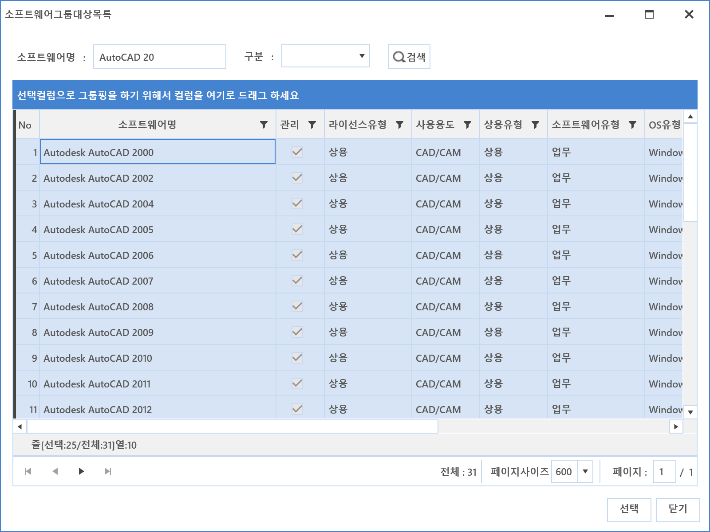
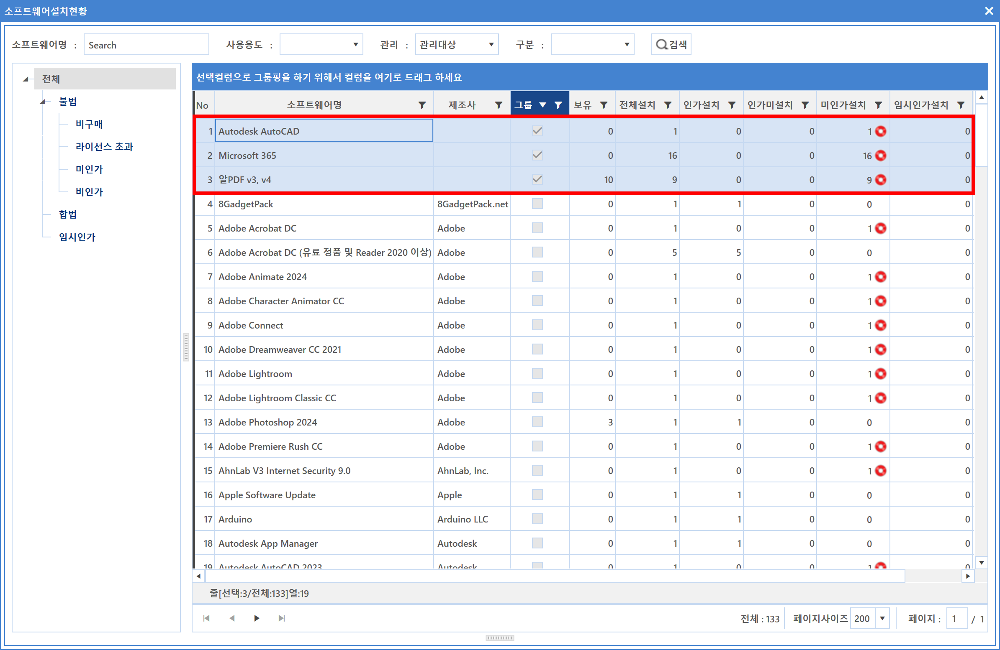
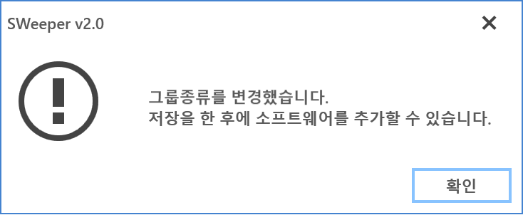

5-3-1. 그룹설정
5-3-1. 그룹설정
Source: https://www.sweeper.or.kr/etc/manual/5-3-1.html
5-3-1. 그룹설정


여러 소프트웨어가 하나의 라이선스를 사용하는 경우와 같이 라이선스 유형에 따라 소프트웨어를 묶어서 관리할 수 있도록 그룹을 설정합니다.

설정방법
- 추가 버튼을 클릭합니다.
- 새 소프트웨어 그룹이 생성됩니다.
- 그룹명을 입력합니다.
-
그룹 종류를 선택합니다.
-
단순그룹 : 라이선스 관리는 개별적으로 하면서 수량만 합계를 구하기 위한 그룹입니다.
- 통합그룹 : 기업의 SW라이선스 계약형태가 SW사용에 대한 버전 제약이 없을 경우, 통합하여 사용하기 위한 그룹입니다.
-
패키지그룹 : MS OFFICE와 같이 특정 패키지를 구매시, 워드나 엑셀 같은 소프트웨어에 대한 사용권이 함께있는 경우에 사용하는 그룹입니다.
-
그룹 SW 목록에서 추가 버튼을 클릭합니다.
- 소프트웨어 그룹 대상 목록이 팝업되면 소프트웨어를 검색하여 그룹 대상 소프트웨어를 선택합니다.

- 선택한 소프트웨어의 옵션을 입력합니다.

- 그룹명 : 그룹으로 구분지어 관리할 명을 입력합니다.
- 설명 : 그룹의 간략한 설명을 입력합니다.
-
그룹종류 : 그룹 종류를 선택합니다.
-
그룹핑에 대한 구성은 소프트웨어설치현황 메뉴에서 조회 가능 합니다.

참고사항
- 본 메뉴에서는 프린트 기능이 제공되지 않습니다.
-
통합/패키지 그룹 추가시에는 하위 SW를 설정하기전 저장이 필요합니다.
-
저장하지 않았을 시 아래와 같은 팝업창이 나타납니다.
- 
© Copyright SWeeper Inc.. All Rights Reserved